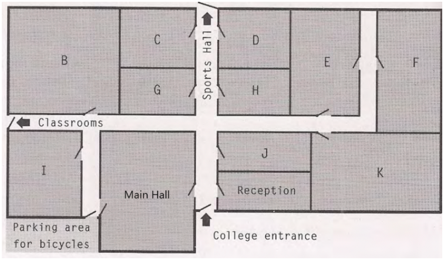
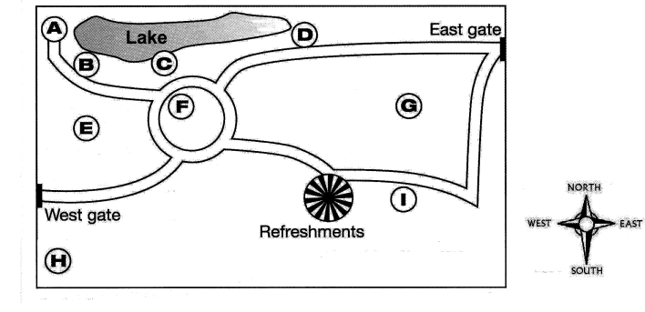

Đề bài
Exercise 1
◉ Xem transcript
Hello, everyone, and welcome to our college Natural History Day. You've all got your programme for the day, but let me just give you a bit of information about your options for this morning's sessions, which begin at half past nine. Remember, you need to attend one of these sessions.
All right, your first choice is called “Dogs Might Fly”, which will take place in Room 27. Professor Keenan, who you may remember ran a workshop last year on how dinosaurs became extinct, will be giving a lecture on the evolution of animals. In particular, she'll be looking at how they may evolve in the future, and this will be followed by a group discussion where you'll get a chance to ask her questions and offer your own thoughts and opinions on this. So, if the evolution of animals is something you're interested in, head for Room 27.
We all know that animals communicate with each other, but what about flowers? Your second choice is a video presentation called “Flowers Talk”. This considers the possibility that plants and flowers do actually communicate with each other. The video is presented by Patrick Bell, who has just written a book on how plants adapt to their natural environment, so it should be very interesting. That will take place in the lecture room, no sorry, correct that, here in the main hall. We've had to move it because the lecture room is being renovated.
The third choice is ideal for those of you who want to get a bit of fresh air. We've called it “A World in Your Garden”, which we thought was appropriate as it looks at the sort of things you can find just by stepping out of your front door. Anyway, for those of you interested in getting away from the classroom, Doctor Watkins will be taking you on a nature walk through the local park, and will be telling you about some of the fascinating animals and plants that live and grow nearby. And it's a lovely day for a walk!
The final option, well you might want to avoid this one if you're frightened of things like snakes, as this is a hands-on workshop where you'll actually get a chance to handle these exotic creatures. It won't just be snakes, however. I believe Tom Howard, our resident reptile expert, has brought some other reptiles along for you to meet, including his pet tortoise, Reggie, who is over 100 years old, and a pet lizard he calls Arthur. So, if you want to meet Reggie and his other reptile friends, head on over to the Biology lab at 9.30. I'm sure you'll have a lot of fun. For those of you who don't usually use the Biology lab, could I remind you that you need to put on one of the white coats by the door before you go in.
OK, now, we've got some students here from Bardwell College who ...
Exercise 2
Complete the route from the Main Hall to Room F before Exercise 3. Use the supplied campus plan below.

Exercise 3
◉ Xem transcript
OK, now, we've got some students here from Bardwell College who have joined us for today's events. Hello to you all, and welcome.
Now, before our day begins, you'll need to get a guest badge, which you'll have to wear while you're on the college premises. You can get these from the Administration Office. To get there from the Main Hall, leave the hall by the door opposite reception, turn left, and just follow the corridor to the end. The Administration Office is on your right. Don't go any further, or you'll be in the sports hall.
If you show your guest badge in the café, by the way, you'll get a 20% discount on drinks and sandwiches. To get there, from the Main Hall, walk along the corridor between the Main Hall and reception and turn right. The café is through the first door on your left. Directly opposite the café, on the same corridor, is the student common room, where you can go to relax and perhaps meet some of our own students.
If you have any valuables that you don't want to carry around with you, I suggest you put these in a locker. These are next to the sports hall, opposite the Administration Office. You can get a key for a locker when you get your guest badge from the Administration Office. And if you want to use our library, leave the common room and continue along the corridor; it is the large room marked on the plan.
Exercise 4
Bộ file được gửi không có MP3 riêng cho Exercise 4; transcript gốc vẫn được giữ đầy đủ bên dưới.
◉ Xem transcript
Hello, I'm delighted to welcome you to our Wildlife Club, and very pleased that you're interested in the countryside and the plants and creatures of this area. I think you'll be surprised at the variety we have here, even though we're not far from London. I'll start by telling you about some of the parks and open spaces nearby.
One very pleasant place is Halland Common. This has been public land for hundreds of years, and what you'll find interesting is that the River Ouse, which flows into the sea eighty kilometres away, has its source in the common. There's an information board about the plants and animals you can see here, and by the way, the common is accessible 24 hours a day.
Then there's Holt Island, which is noted for its great range of trees. In the past willows were grown here commercially for basket-making, and this ancient craft has recently been reintroduced. The island is only open to the public from Friday to Sunday, because it's quite small, and if there were people around every day, much of the wildlife would be kept away.
From there it's just a short walk across the bridge to Longfield Country Park. Longfield has a modern replica of a farm from over two thousand years ago. Children's activities are often arranged there, like bread-making and face-painting. The park is only open during daylight hours, so bear that in mind if you decide to go there.
Exercise 5

Bộ file được gửi không có MP3 riêng cho Exercise 5; transcript gốc vẫn được giữ đầy đủ bên dưới.
◉ Xem transcript
And finally I'd like to tell you about our new wildlife area, Hinchingbrooke Park, which will be opened to the public next month. This slide doesn't really indicate how big it is, but anyway, you can see the two gates into the park, and the main paths.
As you can see, there's a lake in the north-west of the park, with a bird hide to the west of it, at the end of a path. So it'll be a nice quiet place for watching the birds on the lake.
Fairly close to where refreshments are available, there's a dog-walking area in the southern part of the park, leading off from the path. And if you just want to sit and relax, you can go to the flower garden: that's the circular area on the map surrounded by paths.
And finally, there's a wooded area in the western section of the park, between two paths. Okay, that's enough from me, so let's go on to ...
Bài làm
Exercise 1
Complete the Natural History Day programme. Write NO MORE THAN TWO WORDS OR A NUMBER for each answer.
Exercise 2
Complete the directions using: end, first, follow, leave, left, opposite, pass, right, second, turn.
Exercise 3
Label the plan. Choose the correct letter A–K for Questions 1–5.
Exercise 4
Complete the table.
Exercise 5
Choose the correct answer from the list A–I.
Đáp án và vocabulary
Ex 1: evolution; group discussion; talk; Main Hall; garden; nature walk; other reptiles; Biology.
Ex 2: leave, opposite, turn, follow, pass, right, end, left, first, right. Ex 3: D, E, K, C, B. Ex 4: trees, Friday, farm. Ex 5: A, I, F, E.
Vocabulary table
| Useful word / phrase | Type | Meaning | Sentence from the transcript |
|---|---|---|---|
| evolve | verb | develop gradually; tiến hóa | She will look at how animals may evolve in the future. |
| possibility | noun | something that may happen; khả năng | The video considers the possibility that plants communicate. |
| adapt to | verb phrase | change to suit new conditions; thích nghi | Plants adapt to their natural environment. |
| renovate | verb | repair and improve a building; cải tạo | The lecture room is being renovated. |
| sort | noun | a type or kind; loại | The sort of things found outside your front door. |
| exotic | adjective | unusual and from a distant place; kỳ lạ, ngoại lai | Students get a chance to handle exotic creatures. |
| hands-on | adjective | involving practical participation; thực hành | It is a hands-on workshop. |
| on the premises | phrase | within a building and its grounds; trong khuôn viên | Wear your guest badge on the college premises. |
| valuables | plural noun | valuable personal possessions; đồ có giá trị | Put valuables in a locker. |
| open space | noun phrase | an undeveloped outdoor area; không gian mở | Nearby parks and open spaces. |
| be noted for | phrase | be well known for; nổi tiếng về | Holt Island is noted for its range of trees. |
| replica | noun | an exact copy; bản sao mô phỏng | Longfield has a modern replica of a farm. |
| bear in mind | phrase | remember and consider; ghi nhớ | Bear the daylight opening hours in mind. |
| indicate | verb | show or point out; chỉ ra | The slide does not indicate how big the park is. |
| refreshments | plural noun | light food and drinks; đồ ăn nhẹ | The dog-walking area is close to refreshments. |